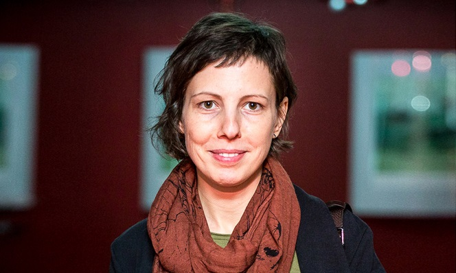
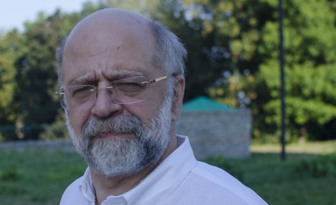
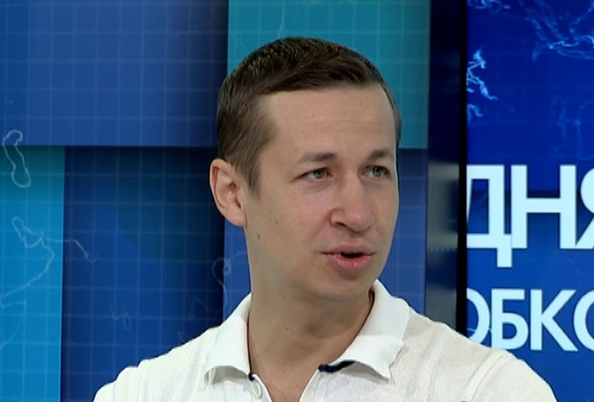

В рамках 47-й «Молодости» был показан один из самых значимых фильмов года, победитель недавнего «Берлинале» - фильм «(Не)прикасайся» румынки Адины Пинтилие.
Недавно на украинском кинорынке появился инновационный продукт – MovieCard.

Обоснованно подозревая, что новый фильм живого классика французского кинематографа Жака Дуайона «Роден» рано или поздно выйдет на украинские экраны.

Накануне национальной премьеры фильма «Ржака», корреспондент портала kino-teatr.ua встретился с его автором – сценаристом и режиссером Дмитрием Томашпольским.

Накануне национальной премьеры комедии «Сотка», которая снята исключительно на частные средства, корреспондент национального портала kino-teatr.ua встретился в Киеве с продюсером и режиссером ленты Александром Беляком и получил у него краткие комментарии по поводу его фильма.